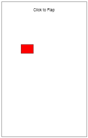

We are going to break the game up into four parts so that we can focus on manageable portions at a time.
1) Design a Bird that will fall with gravity
2) Design the Pipe obstacles that drift toward the bird infinitely
3) Use boxOverlap to detect collisions
4) Add game detail: Images and Score
Phase 1 of our game will focus on the Bird's motion on the screen.
Click the demo above and notice that the Bird:
- Doesn't move in the xDirection at all
- Falls faster the longer that it's in the air
Open the Flappy Bird workspace in CodeHS. You will be met with the following code:
function setup(){
createCanvas(250,400);
rectMode(CENTER);
imageMode(CENTER);
}
function draw() {
background(255);
drawBird();
}
First we need to choose the appropriate variables. Looking at the demo above there are many things that don't change, like the bird's x, width, and height. It's the vertical movement that's the issue.
Like we did with our Pong game, we will be using the speed to repeatedly update the location to cause motion. Add two global variables to your sketch:
In the setup function, initialize y to be the middle of the canvas and the ySpeed to be 0.
If we try to do everything within the draw method, we are going to lose track of where we are and it will be impossible to locate our bugs. In order to help our design, we will be breaking the game down into its individual challenges and creating a function for each part.
The first challenge is drawing the bird. Start with the following code:
The drawBird function doesn't exist, so add it:
function drawBird(){
}
Use this space to draw a red rectangle using the previously created global y variable. Give it an x location of 60, and a width and height of 34 and 24 respectively.
Once you've finished, run your sketch. If you've done it properly the rectangle will appear in the middle of the screen. It will not move yet

We've added a ySpeed variable, but at the moment
Change your draw function to be the following:
function draw() {
background(255);
drawBird();
moveBird();
}
This calls a moveBird() function that doesn't exist yet. Add it to your sketch now.
Like we've done before, write the moveBird function increasing the bird's y by its ySpeed. y += ySpeed;
Right now the ySpeed is 0, so running the sketch won't do anything for you. Test to make sure it's working by going to the setup function and changing the ySpeed to be something positive, like 5. Then running the sketch should provide some motion, but there's a problem. Increasing y by a constant ySpeed will cause a linear, drifting. We want to simulate gravity, which is an acceleration of the ySpeed that makes it look like it's falling.
To create gravity, we need to add another variable named gravAccel. In the setup function, initialize gravAccel to something small, like 0.3 or 0.5.
Once the gravAccel variable has been established, modify the moveBird function so that it first increases the bird's y by ySpeed, but then increases ySpeed by gravAccel ( ySpeed += gravAccel; ). This will cause the speed to increase with time, causing parabolic motion.
Once you've done that, test out your sketch. Watch carefully as the bird falls off the screen, you should see a more natural fall.
We're at a place where the Bird's movement is contolled by the ySpeed variable, and gravity is constantly increasing the speed. A 'flap' is a sudden change in the ySpeed. Add the mousePressed function to your sketch, which only needs to set the ySpeed to a value around -10. This will cause the bird to go upward for a while, but eventually the gravity will drag it back down.
Your Bird is constantly trying to fall out of the window, which can be annoying. Add an if statement to the moveBird function that will check the Bird's y value after it falls. If the bird is off the screen:
At this point you should have a sketch that functions as the one at the top of the page does. Clicking the canvas should cause a bird to flap, and it should stop as it hits to ground.
Make sure that you've named your sketch Flappy Bird and Saved. Copy and paste the current version of you sketch below.
The other entity that we have to worry about in our game is the pipes that drift across the screen and provides an obstacle for the bird to dodge. They are a little more complex than the bird, but the basic idea is the same. We'll start by getting a drawing function working, and then build from there.
If you look at the demo above, you can see that each set of pipes has an upper and lower rectangle drawn for it. Instead of keeping track of x and y values for both pipes, we'll keep track of a single x and y. This will represent the location exactly between the two pipes, temporarily drawn above as a blue line. This way we can calculate both pipes and store less information.
Change your draw function to include a call to pipePair() with 200 and 250 as parameters.
function draw() {
background(255);
drawBird();
pipePair(140,170); //dummy pipe
moveBird();
}
Also add the pipePair function to you sketch:
function pipePair(pX,pY){
}
Notice that this function takes in parameters pX and pY. Your task is to use pX and pY to draw both the top and the bottom pipes centered on pY (you don't have to draw the blue line if you don't want to). Remember that for drawing we need the x,y,width, and height of each rectangle. In order to make our lives easier later, we're going to make the pipes be exactly the size of the images that we're going to eventually overlay.
This means we know the following:
- All Pipes have a width of 52.
- All Pipes have an x that is the same as pX
- The Top Pipe has a height of 288
- The Bottom Pipe has a height of 242
The y of the pipes is trickier. We need to start at pY, accomodate for the 100-ish, and use half the height of the pipes to find the center of the pipe for drawing. After all that we can determine that:
Use the information above to determine the x,y,width, and height of both rectangles and use the rect() function to draw them. It is important that you are in rectMode(CENTER), or problems will occur.
Double Check: The drawPipe function accepts the pX and pY parameters because it will eventually be used to draw another set of pipes. If you accidentally use the values 140 or 170, this will work now, but break later. Make certain that your drawPipe() function only uses pX and pY now to prevent frustration.
To make sure that the pipePair() function works properly, modify the (140,170) in the draw function to be different, like (200,120), and make sure that the pipes draw in a new location.
Right now we're focusing on a single pipe, but eventually we're going to have multiple pipes represented. To prepare for that situation, we're going to remove the pipePair() call from the draw() function and into a brand new drawPipes(); function to be called from the main draw loop.
function draw() {
background(255);
drawBird();
drawPipes();
moveBird();
}
function drawPipes(){
pipePair(140,170);
}
This should change nothing about how the program looks, but will be beneficial later.
Right now, the draw function is drawing a static pipe that will never move. We need to add in the horizontal movement to the pipes, which means that the x location should be variable.
Create a Global variable in your sketch named pipeX. This is going to represent the x value of the pipe on the screen.
In the setup function, assign an initial value of 250 to it. This is far to the right of the window, but should still show a little bit.
Modify the drawPipes() function to use pipeX when drawing: pipePair(pipeX,150);. For now we are going to leave all the pipes with a y of 150. We'll return to it later.
Update your draw function to be the following:
function draw() {
background(255);
drawBird();
drawPipes();
moveBird();
movePipes();
}
You should also add the new movePipes() function to the end of your sketch
function movePipes(){
}
To get the pipes moving, we will first establish a speed for them to go. Add a global variable named pipeSpeed and assign a value of -2 to it in setup(). If you want to tweak the challenge of your game, you can make this value larger or smaller.
Once pipeSpeed has been declared and initialized, we can write the movePipes() function so that it causes the pipe to drift. Like before the x value of the pipe should increase by the speed of the pipe.
When you've done that, running your sketch should cause the pipe to start moving. It should move at a steady speed to the left and eventually leave the screen.
250 x 400 is the size of the game, but while we're working on it we will want to see what is going on offscreen. Go to the setup function and temporarily widen the canvas from 250 to 500. This 'developer mode' will allow us to get a better view of what's happening in our game.
As a pipe drifts off the left side of the canvas, we're going to want to recycle it by resetting its x value to be larger. This will cause an infinite amount of pipes to come and challenge the bird.
In the movePipes() function, after the pipe's x is increase by the speed you should check to see if it's gone so far to the left that it's gone off the screen. Since the pipe's x is its center, this would mean that it had gone less than a negative value, like -30. If it is, reset the pipeX variable by increasing it by 500 (do not simply set it to 500).
Why 500? Eventually we are going to have two pipes, each meant to be 250 apart. 500 is chosen so that it will occupy every other location.
If all is done properly, you should have a sketch that operates like the one at the top of the page. A bird that flaps when clicked, and the beginnings of an infinite pipe system. There is still plenty left to do, but this is a solid foundation.
Open up your previous Flappy Bird project, where we've worked hard to get our pipe incorporated into our project. The drawPipes(), pipePair(), and movePipes() functions all have a specific purpose, but our one pipe leaves the screen very quickly and then we have nothing left. In order to keep the game alive, we're going to have to keep track of a few more pipes. This means that we're going convert our current code from one pipeX to multiple pipeXs. This will require thinking about an array of values accessed using square brackets, instead of a single number.
First, rename the pipeX variable to be pipeXs to reflect that this will be an array of multiple x values, each meant to represent its own pipe. During this assignment pipeX will go away. Each time we remove some pipeX code, we will replace it with code that performs the same task with each location in the pipeXs array.
In the setup() function, we'll replace pipeX's inital assignment to be an entire array of values to pipeXs
pipeXs = [250, 500]; //start with two pipes, 250 pixels apart
This will represent two pipes that we want to see on the screen. Now, instead of the single pipeX variable, we now have pipeXs[0] and pipeXs[1]. They look funny, but we they are just variables that we can assign values to.
The previous pipe functions used the singular pipeX and will likely break your code if you run it now, we need to modify them to use the square bracket notation to access the individual values from the pipeXs array ( pipeXs[0], and pipeXs[1] )
- drawPipes() should now call pipePair() two times, each time with a different value from the pipeXs array to represent the x. You should still be using 150 for the y
- movePipes() should increase both locations in the pipeXs array. Afterwards you should reset each of them individually.
If done properly, we should now see two pipes on the screen, each of them moving and resetting when necessary.
Right now we haven't truly experienced the convenience of an array. This is because we are currently treating pipeXs[0] and pipeXs[1] as separate variables to be manipulated in the same way that we would treat individual pipeX1 and pipeX2 variables. In coding you'll find that arrays are powerful because you can use a loop to process every location in the same way. For the next step we are going to overengineer our pipe functions a little bit. Even though there are only two values in the array, we are going to practice using a for to use a loop to process all the values in the same way. The loop that we use will continue to be useful as we work more with Arrays.
Right now we have two functions that 'process every value in pipeXs': drawPipes() and movePipes(), which likely have code that looks like this:
function drawPipes(){
pipePair(pipeXs[0], 150);
pipePair(pipeXs[1], 150);
}
While this is a simple enough function, we can ask the question: What if there were 100 pipes? I could copy-paste:
function drawPipes(){
pipePair(pipeXs[0], 150);
pipePair(pipeXs[1], 150);
pipePair(pipeXs[2], 150);
pipePair(pipeXs[3], 150);
pipePair(pipeXs[4], 150);
pipePair(pipeXs[5], 150);
pipePair(pipeXs[6], 250);
....too much copy-paste
}
Notice that we have ourselves another number pattern. Like when we were looping through strings, it is index based.
This means that we can pull out a familiar loop:
for( let index = 0; index < pipeXs.length; index++)
Just like with strings, the looping variable represents the index. It starts at 0 and increases by 1, making sure to represent every index up to, but not including, the length of the array.
This means that we can rerite the drawPipes() function as a for loop with the index as the number pattern:
function drawPipes(){
for( let index = 0; index < pipeXs.length; index++){ //Sets the index variable to be 0 and 1
pipePair( pipeXs[index] , 150 ); //Calls pipePair with each x value retrieved from the 'current' index
}
}
We now have a loop that will help us access every location in an array.
for( let index = 0; index < pipeXs.length; index++){
//use pipeXs[index] to represent pipeXs[0], pipeXs[1], etc..
}
By setting up this loop header, we can use pipeXs[index] as a placeholder for 'every variable in the array'.
Go to the movePipes() function, which currently does the same process twice
Your task now is to update it to use the index based loop to move all pipes in the array. This means using a loop and:
Since you're now using a loop, you should only have to do the proces once to pipeXs[index] instead of repeating yourself for pipeXs[0] and pipeXs[1]
When you've finished, you movePipes() function should no longer refer to pipeXs[0] or pipeXs[1], but still run like it did before.
We've put a lot of time into dealing with variables to represent the pipes' x values, but we've been leaving the y values at a constant 250. This makes the pipe's gap always in the same place. To add more challenge to the game, we'll set up the pipes to generate at different y values.
We've been representing the pipe's x values using an array. We can use the same strategy to represent the y values. Add a new global variable named pipeYs. In the setup() function, assign an array where each value is 250.
pipeXs = [250, 500]; pipeYs = [150, 150];
These two arrays are called parallel arrays because they are meant to be read together. Each pipe's location will be made up of one value from pipeXs and one value from the corresponding index in the pipeYs array. Right now this means that all pipes still have a y value of 250, but that can be changed later.
The drawPipes() function currently uses a loop that calls pipePair(pipeXs[index], 150). Since each set of pipes shares an index in both arrays, we can use the index variable to access the same location in each array. THIS WILL NOT REQUIRE A NEW LOOP.
pipePair( pipeXs[index], pipeYs[index] );
Make this change to your code and run it again to test it. Since all the values in pipeYs are 150 your pipes should look the same as before. To test and make sure that you are properly using the array, modify the setup() function to start pipeYs with different values, like [120,320], and run it again to see if the pipes look different.
Every new pipe that we create should have a different y value. Right now this happens in the movePipes() function when a pipe passes -30 and a location in pipeXs is increased. Modify each if statement to also randomize pipeYs[index] to be a random value between 100 and 250. You may need to add curly-braces to your if statements, now that they have multiple things to do.
To test this, run your sketch and let a few pipes pass. After the first couple they should start randomizing.